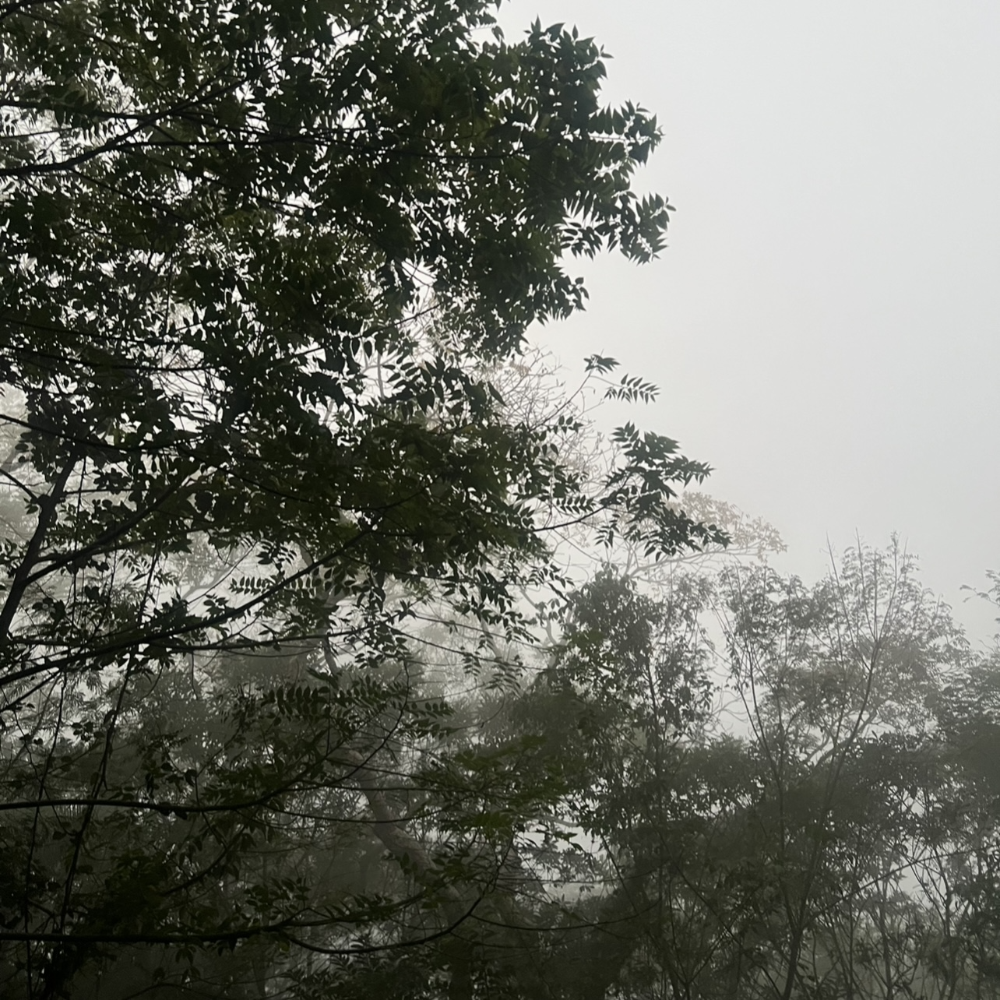
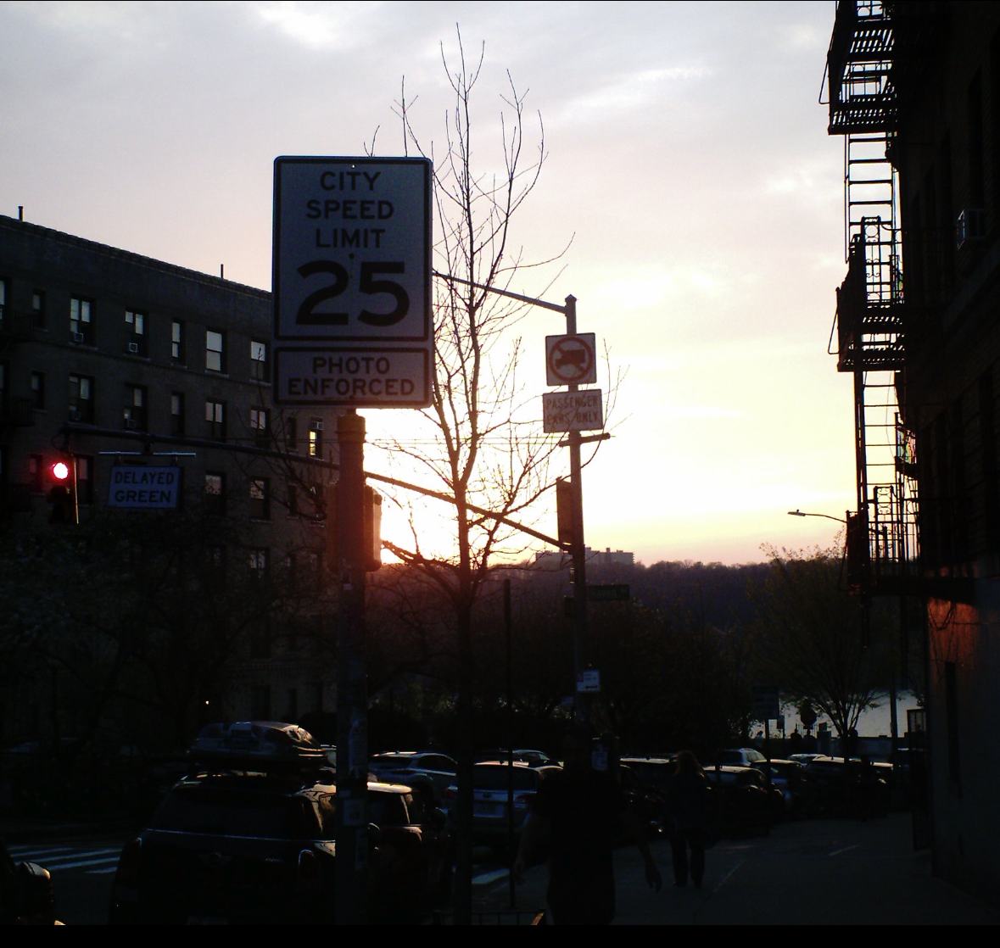
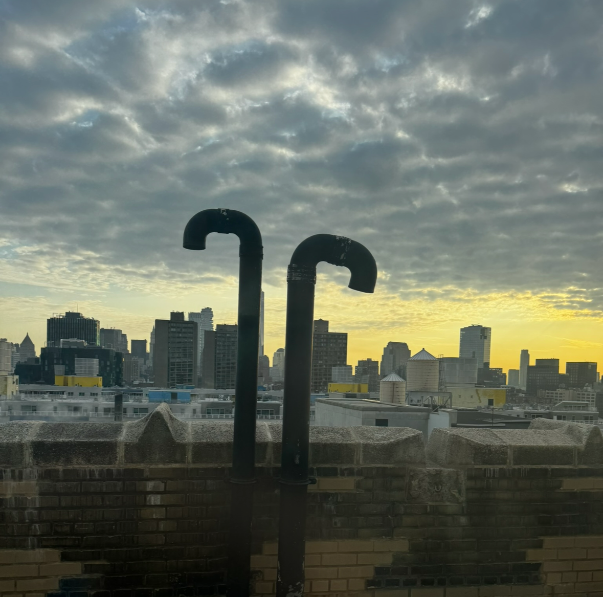
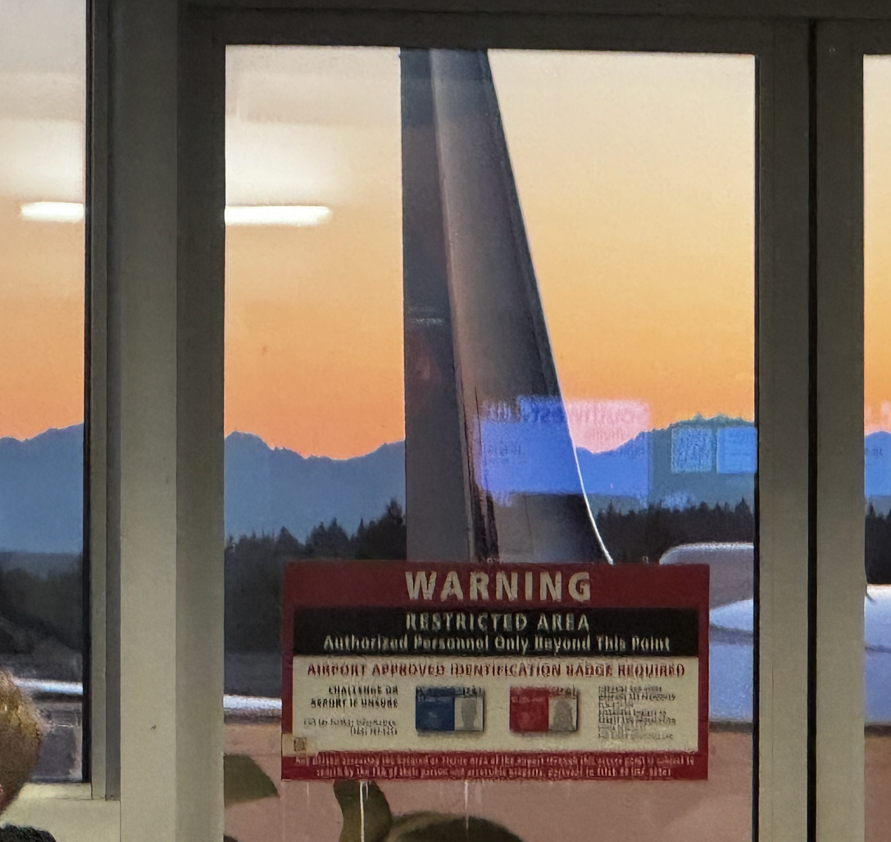
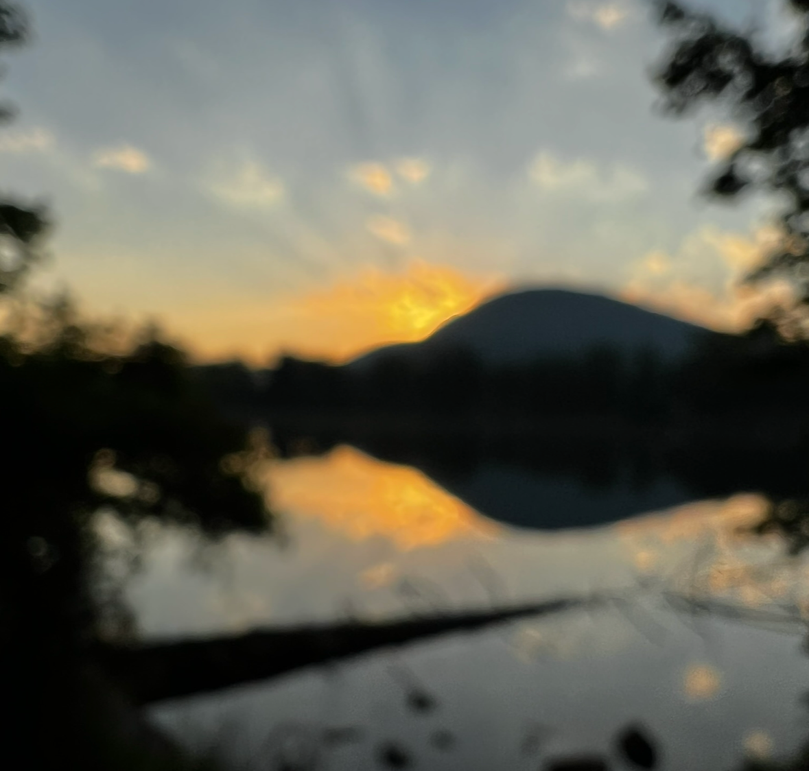
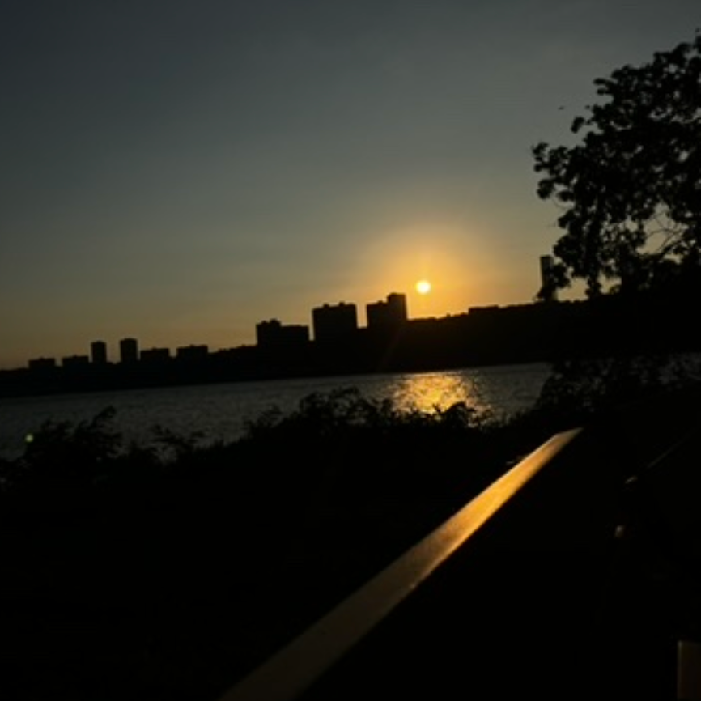

What makes a not-so-great sunset picture?
- Uninteresting view
- Unrealistically high expectations
- Too many or too few clouds
- Lack of:
- Bold/bright colors
- High contrast
- Good visibility
- Poor camera quality






And here is an extremely anticlimactic time lapse video of a sunrise: